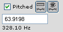

|
Mobileer Instrument Editor
CONFIDENTIAL and PROPRIETARY - © 2002-6 Mobileer Inc.
|
Measuring Pitch
Most audio samples have an associated pitch. It is very important to measure this pitch accurately. The pitch is used to:
- select WaveTables closest to the note being played
- automatically snap to properly sized loops when dragging the mouse
- quantize the resampling rate so that loops contain an integer number of samples
- play notes at the proper pitch
- Open a wavetable if not already open.
- If the "Resample" box is checked, please uncheck it and then click the "Zoom out all the way" button or item in the View menu.
- Select a region near the start of the wavetable close to where you might place a loop.
- Click "Fit Selection" button (or menu item) to zoom in on the selected region. You should have at least 5-20 cycles of the waveform selected. Select a new region if you have too much or too little data selected. 
- Click the "Measure" button.
 This will measure the pitch of the waveform using an autocorrelation algorithm. Notice the MIDI pitch will appear in the text field.
This will measure the pitch of the waveform using an autocorrelation algorithm. Notice the MIDI pitch will appear in the text field.
- To verify that the pitch is correct, drag the mouse over the waveform. The selection range should automatically snap to a zero crossing and then snap to complete cycles of the waveform. This makes it very easy to find correct loop points.
- Note that some waveforms are very complex and have strong harmonics. The algorithm is designed to take this into account but may get confused. It is most likely that the pitch will be an octave high or an octave low.
- If you believe the pitch is incorrectly measured then enter a new MIDI pitch and hit the Enter key. Check it by dragging the mouse as above to see if it snaps to an appropriate boundary.
Please note that it does not matter if the recorded instrument is "in tune". The musician can be off by half a semitone and it won't matter as long as the actual recorded pitch is measured. The Mobileer synthesizer will account for any difference between the desired pitch and the actual pitch when playing the wavetable.
Please also note that the pitch can be overriden in the WaveSet Region Editor.
| Top | Previous | Next |